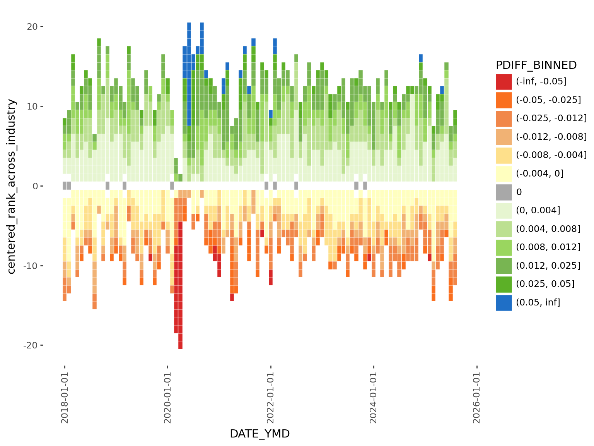

1from pyprojroot import here- 1
-
pyprojrootis similar to R’s package here, which lets us construct filepaths relative to the project root. This is very convenient especially for quarto projects with complex file organization.
Current Canadian sentiment reflects significant economic uncertainty, with rising cost-of-living pressures, global political instability, and widespread layoffs affecting multiple sectors. For the 2025 plotnine contest, I wanted to explore official Canadian labour statistics using plotnine, a visualization library that brings the powerful Grammar of Graphics framework to Python.
Plotnine is a python data visualization graphics, heavily inspired by ggplot2. Having extensive experience with ggplot2 and R but less with python, I’m excited to explore plotnine through this submission.
In this tutorial, I’ll walk through the process of creating my plotnine 2025 contest submission: A visualization of that tracks employment across Canadian industries, ranked by their monthly percent change in employment. This visualization reveals which industries are expanding versus contracting in Canada’s economic climate over time.
In this initial code chunk we initialize some parameters that, later if needed, we can rerun this entire notebook with different parameters (e.g. different years).
1from pyprojroot import herepyprojroot is similar to R’s package here, which lets us construct filepaths relative to the project root. This is very convenient especially for quarto projects with complex file organization.
LABOUR_DATA_FILE = here() / "data" / "14100355.csv"
FIGURE_THEME_SIZE = (8, 6)
FILTER_YEAR = (2018, 2025)Now load the rest of the packages. Throughout this tutorial, I will describe when functions from each of these packages are being used.
# Data manipulation
import polars as pl
import polars.selectors as cs
from datetime import date, datetime
# Visualization
from plotnine import *
# Mizani helps customize the text and breaks on axes
from mizani.bounds import squish
import mizani.labels as ml
import mizani.breaks as mb
import textwrap # for wrapping long lines of text
# Custom extract and transform functions for plot data
from labourcan.data_processing import read_labourcan, calculate_centered_rankThe data we are using is from a table called “Employment by industry, monthly, seasonally adjusted (x 1,000)” and can be downloaded using this bash script, or directly from StatCan’s website.
The visualization required a fair amount of data processing which is detailed in this page. The steps are summarized here:
read_labourcan returns a polars.Data.Frame with:
YEAR, MONTH, and DATE_YMD columns extracted from REF_DATElabour = read_labourcan(LABOUR_DATA_FILE)
labour_processed = calculate_centered_rank(labour)Today we’re developing a heatmap to tell the story of Canada’s evolving job market, specifically highlighting how employment numbers vary across industries over time.
The reason why I chose a heatmap is because I wanted to communicate the distinction between growing and shrinking industries. To achieve this, I created a centered ranking system based on monthly percentage change that treats zero as the natural dividing line.
How the ranking works:
+1-1This approach allows viewers to immediately distinguish between industries that are adding jobs versus those that are shedding them. For implementation details, see the calculate_centered_rank function.
(
ggplot(
(
1 labour_processed.filter(
pl.col("YEAR") >= FILTER_YEAR[0], pl.col("YEAR") <= FILTER_YEAR[1]
)
),
2 aes(x="DATE_YMD", y="centered_rank_across_industry", color="PDIFF"),
)
+ geom_point(shape="s")
3 + theme_tufte()
+ theme(figure_size=FIGURE_THEME_SIZE, axis_text_x=element_text(angle=90))
4 + scale_color_gradient2(
5 limits=(-0.01, 0.01), low="#ff0000ff", high="#0000dbff", midpoint=0, oob=squish
)
)DATE_YMD (datetime) to the x-axis, our centered ranking (i64) to the y-axis, and colors each point by monthly percentage change PDIFF (f64)
theme_tufte as a base to build up customizations
scale_color_gradient2 is ideal here because it creates a diverging color palette naturally centered around our midpoint of zero
limits=c(-0.01, 0.01) and oob=squish in combination creates an impactful visual effect: the color scale is capped at -1% and +1%, and values beyond these limits will have the darkest colors

This first version suffers by excessive whitespace between points, which is visually distracting. This could be addressed by increasing the point size, but the relationship of point size to the axis ranges, and the figure size makes achieving the right balance tricky.
geom_point or geom_tileI like to start creating plots with the major components such as deciding on which geom is most appropriate.
geom_point is a natural starting point for any plot where both x and y are numerical variables. But geom_tile will plot rectangles specified by a center point, allowing more explicit control of the whitespace between tiles.
(
ggplot(
(
labour_processed.filter(
pl.col("YEAR") >= FILTER_YEAR[0], pl.col("YEAR") <= FILTER_YEAR[1]
)
),
aes(x="DATE_YMD", y="centered_rank_across_industry", fill="PDIFF"),
)
1 + geom_tile(height=0.95, width=30 * 0.95)
+ theme_tufte()
+ theme(figure_size=FIGURE_THEME_SIZE, axis_text_x=element_text(angle=90))
+ scale_fill_gradient2(
limits=(-0.01, 0.01), low="#ff0000ff", high="#0000dbff", midpoint=0, oob=squish
)
)height = 0.95 leaves a small amount of whitespace between tiles vertically. To remove horizontal whitespace, we need to specify a width. Because we are using a datetime axis, we need to specify it in unit of days. But each tile here is a month, so we need to express in units of 30, hence: width = 30*0.95.

scale_color_manualscale_fill_gradient2 used with squish creates a nice palette that’s centered around 0. However scale_fill_gradient2 is limited to 3 colors (high, midpoint, low), but I would like to highlight variability in the data with a lot more control than what these 3 points can provide.
To be more explicit with the colors, I will bin the % change variable and then map each bin to a color manually using scale_fill_manual.
polars.Series.cutBinning is the process of breaking up a continuous variable into categories based on specific thresholds.
labour_processed_cutted = (
labour_processed.with_columns(
pl.col("PDIFF")
.cut(
[
-0.05,
-0.025,
-0.012,
-0.0080,
-0.0040,
0,
0.0040,
0.0080,
0.012,
0.025,
0.05,
]
)
.alias("PDIFF_BINNED")
)
.with_columns(
pl.when(pl.col("PDIFF") == 0)
.then(pl.lit("0"))
.otherwise(pl.col("PDIFF_BINNED"))
.alias("PDIFF_BINNED")
)
.sort("PDIFF")
.with_columns(pl.col("PDIFF_BINNED"))
)
labour_processed_cutted.group_by("PDIFF_BINNED").len()| PDIFF_BINNED | len |
|---|---|
| cat | u32 |
| "0" | 74 |
| "(0.012, 0.025]" | 1292 |
| "(-0.008, -0.004]" | 1201 |
| "(0.008, 0.012]" | 1021 |
| "(-inf, -0.05]" | 47 |
| … | … |
| null | 21 |
| "(-0.004, 0]" | 1999 |
| "(0.025, 0.05]" | 315 |
| "(0.05, inf]" | 58 |
| "(0, 0.004]" | 2624 |
After binning the data by % change, we can see what happens when we map color to this new binned version:
(
ggplot(
(
labour_processed_cutted.filter(
pl.col("YEAR") >= FILTER_YEAR[0], pl.col("YEAR") <= FILTER_YEAR[1]
)
),
aes(
x="DATE_YMD",
y="centered_rank_across_industry",
1 fill="PDIFF_BINNED",
),
)
+ geom_tile(height=0.95)
+ theme_tufte()
+ theme(figure_size=FIGURE_THEME_SIZE, axis_text_x=element_text(angle=90))
)plotnine sees that we mapped a categorical variable to fill, so it uses a default palette that isn’t necessarily optimized for the continuous (ie. ordinal) nature of bins. Making matters worst, we can see that the categories are not even by default ordered correctly from negative to most positive.
It’s definitely uglier, not nicer. But that’s ok, it gives us finer control, and we’re going to use that to fix this issue in the next section…
scale_fill_manual for explicit color mappingNow we need to order the levels, and map to a specific color palette.
We will make PDIFF=0% (no change) to be gray, positive values to have green and blue colors (growth = good), and negative values to be red and orange (contraction = bad) colors.
order = (
labour_processed_cutted.drop_nulls()
.sort("PDIFF")
.select(pl.col("PDIFF_BINNED"))
.unique(maintain_order=True)
.to_series()
.to_list()
)
labour_processed_cutted_ordered = labour_processed_cutted.with_columns(
pl.col("PDIFF_BINNED").cast(pl.Enum(order))
)
1color_mapping = {
"(-inf, -0.05]": "#d82828ff",
"(-0.05, -0.025]": "#fa6f1fff",
"(-0.025, -0.012]": "#f1874aff",
"(-0.012, -0.008]": "#f1b274ff",
"(-0.008, -0.004]": "#FEE08B",
"(-0.004, 0]": "#FFFFBF",
"0": "#a8a8a8ff",
"(0, 0.004]": "#E6F5D0",
"(0.004, 0.008]": "#bce091ff",
"(0.008, 0.012]": "#9ad65fff",
"(0.012, 0.025]": "#78b552ff",
"(0.025, 0.05]": "#5cb027ff",
"(0.05, inf]": "#1f6fc6ff",
}
(
ggplot(
(
labour_processed_cutted.filter(
pl.col("YEAR") >= FILTER_YEAR[0], pl.col("YEAR") <= FILTER_YEAR[1]
)
),
aes(x="DATE_YMD", y="centered_rank_across_industry", fill="PDIFF_BINNED"),
)
+ geom_tile(color="white")
+ theme_tufte()
+ theme(figure_size=FIGURE_THEME_SIZE, axis_text_x=element_text(angle=90))
2 + scale_fill_manual(values=color_mapping, breaks=order)
)values in scale_fill_manual

Now we have a much nicer looking color palette for our graphic. This process illustrates a few things:
scale_fill_gradient2
scale_fill_manual plus our binning procedure
plotnine legend… which in its current form, is mathematically accurate, but we can make it much nicer to look at.
Let’s start by making the text more concise:
1legend_labels = [
"-5%", # the ends can be labelled with the boundary e.g. implies <-5%
"",
"",
"-1%",
"",
"",
"No change",
"",
"",
"",
"1%",
"",
"5%",
]
(
ggplot(
labour_processed_cutted.filter(
pl.col("YEAR") >= FILTER_YEAR[0], pl.col("YEAR") <= FILTER_YEAR[1]
),
aes(x="DATE_YMD", y="centered_rank_across_industry", fill="PDIFF_BINNED"),
)
+ geom_tile(color="white")
+ theme_tufte()
+ theme(
figure_size=FIGURE_THEME_SIZE,
axis_text_x=element_text(angle=90),
legend_justification_right=1,
legend_position="right",
legend_text_position="right",
legend_title=element_blank(),
legend_key_spacing=0,
legend_key_width=10,
legend_key_height=10,
legend_text=element_text(size=8),
)
2 + scale_fill_manual(
values=color_mapping, breaks=order, labels=legend_labels
)
)values, for labels we define a list that is the same length as the breaks
legend_labels to scale_fill_manual

The legend looks a lot nicer, and easier to immediately grasp the range of the data. Even though I originally wanted to make a horizontal legend, this vertical version is a lot easier to implement and looks equally good. ## Text and fonts
Next up is the text and fonts. I played with a few fonts on google fonts before settling on two.
Install the fonts:
FONT_PRIMARY = "Playfair Display"
FONT_SECONDARY = "Lato"
import mpl_fontkit as fk
fk.install(FONT_PRIMARY)
fk.install(FONT_SECONDARY)Font name: `Playfair Display`
Font name: `Lato`Alternatively, if we utilize brand.yml, we can pull these settings directly from it.
from brand_yml import Brand
BRAND = Brand.from_yaml(here())
FONT_PRIMARY = BRAND.typography.base.model_dump()["family"]
COLOR_BACKGROUND = BRAND.color.backgroundWe can also connect other components like using the the brand’s color as our plot background, which will make it the same as the surrounding background from our quarto website.
See this project’s brand.yml here
family from typographycolorThis is convenient because if we want to change the font we can just edit the brand.yml configuration, and these changes will automatically propagate throughout any connected document like this one.
mizani for axis breaks and labelsThe axis breaks and labels for Plotnine graphs can be easily customized using mizani, which is ggplot2’s scales package for python.
We’re going to use mizani.breaks.breaks_date_width so that the x-axis shows each year, and mizani.labels.label_date to drop the “month” part of the date.
import mizani.labels as ml
import mizani.breaks as mb
plot = (
ggplot(
labour_processed_cutted.filter(
pl.col("YEAR") >= FILTER_YEAR[0], pl.col("YEAR") <= FILTER_YEAR[1]
),
aes(x="DATE_YMD", y="centered_rank_across_industry", fill="PDIFF_BINNED"),
)
+ geom_tile(color="white", height=0.95)
+ theme_tufte()
+ theme(
1 text=element_text(family=FONT_PRIMARY),
figure_size=FIGURE_THEME_SIZE,
axis_text_y=element_text(family=FONT_SECONDARY),
axis_text_x=element_text(family=FONT_SECONDARY),
axis_title_y=element_text(weight=300),
legend_justification_right=1,
legend_position="right",
legend_text_position="right",
legend_title_position="top",
legend_key_spacing=0,
legend_key_width=15,
legend_key_height=15,
legend_text=element_text(size=8, family=FONT_SECONDARY),
legend_title=element_blank(),
plot_title=element_text(ha="left"),
plot_subtitle=element_text(ha="left", margin={"b": 1, "units": "lines"}),
plot_background=element_rect(fill=COLOR_BACKGROUND, color=COLOR_BACKGROUND),
)
+ scale_fill_manual(values=color_mapping, breaks=order, labels=legend_labels)
+ guides(fill=guide_legend(ncol=1, reverse=True))
+ scale_x_datetime(
2 labels=ml.label_date("%Y"),
expand=(0, 0),
breaks=mb.breaks_date_width("1 years"),
)
3 + labs(
title="Sector Shifts: Where Canada's Jobs Are Moving",
subtitle=textwrap.fill(
"Track the number of industries gaining or losing jobs each month. Boxes are shaded based on percentage change from previous month in each industry's employment levels.",
width=75,
),
x="",
y="< SECTORS FALLING SECTORS RISING >",
)
)
plottheme(...)
mizani to customize axis breaks and labels to show year
title, subtitle and wrap long lines with the help of textwrap

And that concludes generating the employment heatmap.
At the beginning, I wanted to stop here. However, I found the visualization sparks more questions.
Although the graphic clearly shows contractions and growth over time, it lacks details that I think are critical for meaningful interpretation:
What are the specific industries that are growing and shrinking? And by how much?
It will be a challenge to display even more information into an already information-dense visualization. But let’s see what we can do.
We’re going to take advantage of the layering capabilities in plotnine and add industry-specific information ont op.
1INDUSTRY = "Wholesale and retail trade [41, 44-45]"
2plot_data_subsetted = labour_processed_cutted.filter(
pl.col("YEAR") >= FILTER_YEAR[0],
pl.col("YEAR") <= FILTER_YEAR[1],
pl.col("Industry") == INDUSTRY,
)
plot_highlight_industry = (
plot
3 + geom_point(data=plot_data_subsetted, color="black", fill="black")
+ labs(title=INDUSTRY, subtitle="")
)
plot_highlight_industrygeom_point
This approach allows us to trace specific industry trends in the context of the broader employment dynamics.
I think adding a few key statistics to the graphic will leave a more impactful impression on readers.
In this section I compute the change, and % change for the last:
# Define offsets
offsets = {
"1M": 1,
"5M": 5,
"1Y": 12,
"5Y": 60,
}
# Sort by industry + date
labour_offset = labour_processed_cutted
labour_offset = labour_offset.sort(["Industry", "DATE_YMD"])
# Compute diffs and %diffs for each horizon
for label, months in offsets.items():
labour_offset = labour_offset.with_columns(
[
(pl.col("DATE_YMD").shift(months).alias(f"DATE_YMD_{label}")),
(pl.col("VALUE").shift(months).over("Industry").alias(f"VALUE_{label}")),
(pl.col("VALUE") - pl.col("VALUE").shift(months).over("Industry")).alias(
f"DIFF_{label}"
),
(
(pl.col("VALUE") - pl.col("VALUE").shift(months).over("Industry"))
/ pl.col("VALUE").shift(months).over("Industry")
* 100
).alias(f"PDIFF_{label}"),
]
)
# convert to dictionary for easier access
stats = labour_offset.filter(
pl.col("Industry") == INDUSTRY, pl.col("DATE_YMD") == pl.col("DATE_YMD").max()
).to_dicts()[0]
# generate a string that we can use as a subtitle
periods = [
f"{stats['DIFF_1M']:<+4.0f} {f'({stats["PDIFF_1M"]:+.2f}%)':<10} 1 Month",
f"{stats['DIFF_5M']:<+4.0f} {f'({stats["PDIFF_5M"]:+.2f}%)':<10} 5 Months",
f"{stats['DIFF_1Y']:<+4.0f} {f'({stats["PDIFF_1Y"]:+.2f}%)':<10} 1 Year",
f"{stats['DIFF_5Y']:<+4.0f} {f'({stats["PDIFF_5Y"]:+.2f}%)':<10} 5 Years",
]
subtitle_text = "\n".join(periods)The plan is to add these into the plot as a subtitle. I would love to additionally set green and red colors to positive and negative values, but that isn’t currently possible in plotnine. However, #612 suggests this may be possible in the longer term.
import re
(
ggplot(
labour_processed_cutted.filter(
pl.col("YEAR") >= FILTER_YEAR[0], pl.col("YEAR") <= FILTER_YEAR[1]
),
aes(x="DATE_YMD", y="centered_rank_across_industry", fill="PDIFF_BINNED"),
)
+ geom_tile(color="white", height=0.95)
+ theme_tufte()
+ theme(
text=element_text(family=FONT_PRIMARY),
figure_size=FIGURE_THEME_SIZE,
axis_text_y=element_text(family=FONT_SECONDARY),
axis_text_x=element_text(family=FONT_SECONDARY),
axis_title_y=element_text(weight=300),
legend_justification_right=1,
legend_position="right",
legend_text_position="right",
legend_title_position="top",
legend_key_spacing=0,
legend_key_width=15,
legend_key_height=15,
legend_text=element_text(size=8, family=FONT_SECONDARY),
legend_title=element_blank(),
plot_title=element_text(ha="left"),
plot_subtitle=element_text(ha="left", margin={"b": 1, "units": "lines"}),
plot_background=element_rect(fill=COLOR_BACKGROUND, color=COLOR_BACKGROUND),
)
+ scale_fill_manual(values=color_mapping, breaks=order, labels=legend_labels)
+ guides(fill=guide_legend(ncol=1, reverse=True))
+ scale_x_datetime(
labels=ml.label_date("%Y"),
expand=(0, 0),
breaks=mb.breaks_date_width("1 years"),
)
+ labs(
1 title=re.sub(r" \[.*?\]$", "", INDUSTRY),
2 subtitle=subtitle_text,
x="",
y="< SECTORS FALLING SECTORS RISING >",
)
+ geom_point(data=plot_data_subsetted, color="black", fill="black")
)subtitle_text to labs
That concludes the end of this tutorial. See the main page for the complete visualization with some interactivity to allow filtering through industry-specific trends.
Overall, plotnine is a fantastic addition to Python’s data visualization universe. Although I found some differences and missing functionality compared to R’s ggplot2, I was still able to create a complex visualization with relative ease. And, plotnine is still in early days, so I expect improvements and fixes will be developed in future releases.